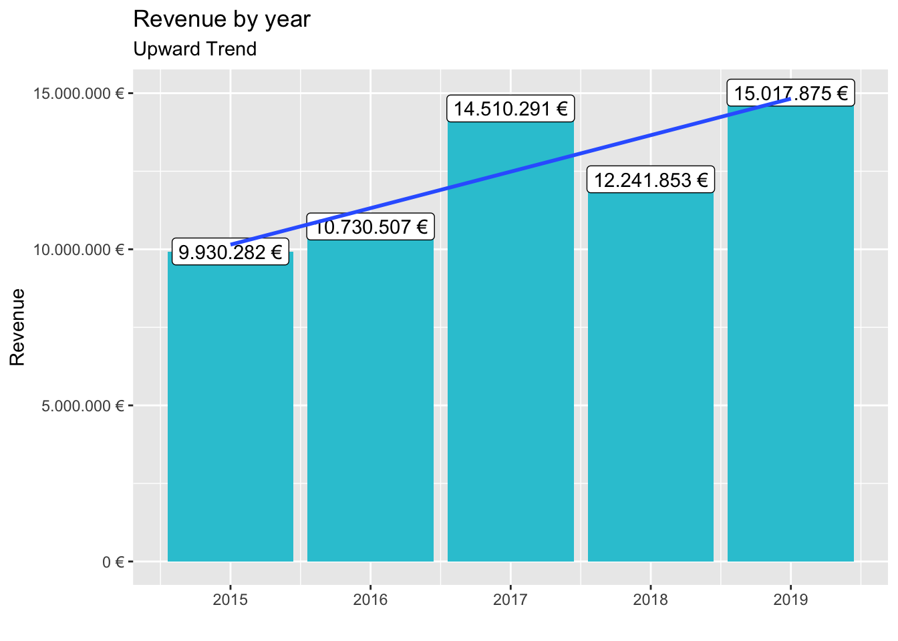
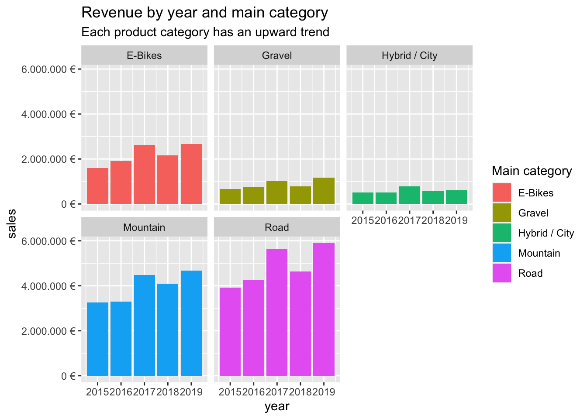
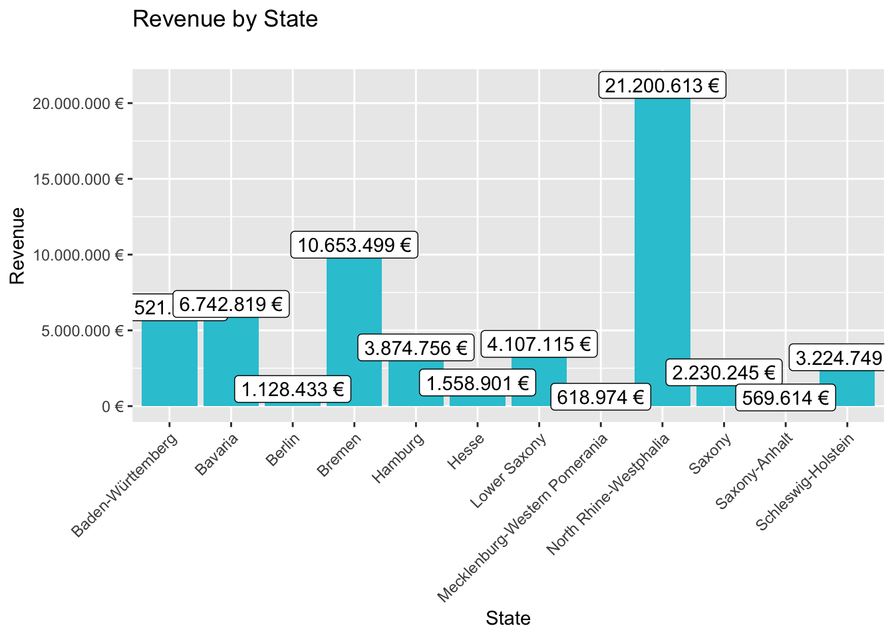
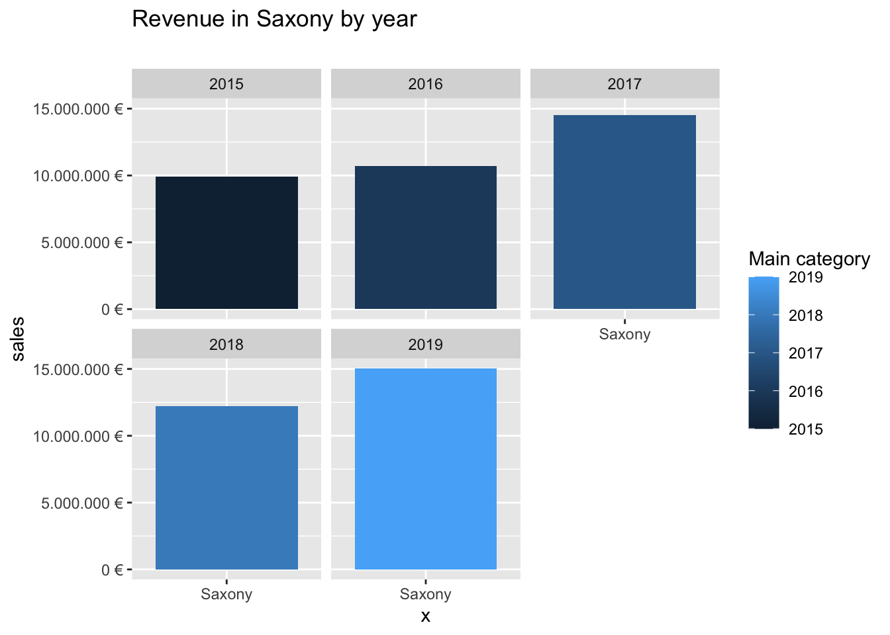
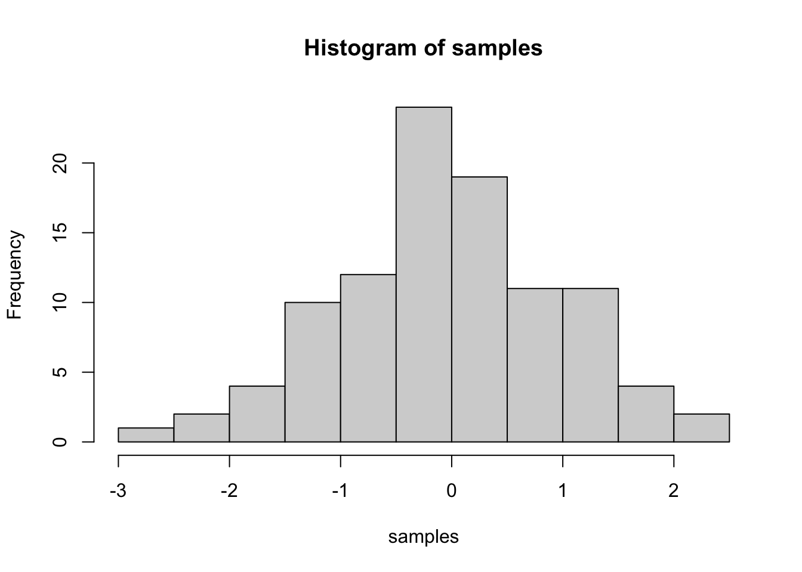

Last compiled: 2020-11-25
library(tidyverse)
library(readxl)
library(lubridate)
library(writexl)bikes_tbl <- read_excel(path = "00_data/01_bike_sales/01_raw_data/bikes.xlsx")
orderlines_tbl <- read_excel("00_data/01_bike_sales/01_raw_data/orderlines.xlsx")
bikeshops_tbl <- read_excel("00_data/01_bike_sales/01_raw_data/bikeshops.xlsx")bike_orderlines_joined_tbl <- orderlines_tbl %>%
left_join(bikes_tbl, by = c("product.id" = "bike.id")) %>%
left_join(bikeshops_tbl, by = c("customer.id" = "bikeshop.id"))
bike_orderlines_joined_tbl %>% glimpse()## Rows: 15,644
## Columns: 19
## $ ...1 <chr> "1", "2", "3", "4", "5", "6", "7", "8", "9", "10…
## $ order.id <dbl> 1, 1, 2, 2, 3, 3, 3, 3, 3, 4, 5, 5, 5, 5, 6, 6, …
## $ order.line <dbl> 1, 2, 1, 2, 1, 2, 3, 4, 5, 1, 1, 2, 3, 4, 1, 2, …
## $ order.date <dttm> 2015-01-07, 2015-01-07, 2015-01-10, 2015-01-10,…
## $ customer.id <dbl> 2, 2, 10, 10, 6, 6, 6, 6, 6, 22, 8, 8, 8, 8, 16,…
## $ product.id <dbl> 2681, 2411, 2629, 2137, 2367, 1973, 2422, 2655, …
## $ quantity <dbl> 1, 1, 1, 1, 1, 1, 1, 1, 1, 1, 1, 2, 1, 1, 1, 1, …
## $ model <chr> "Spectral CF 7 WMN", "Ultimate CF SLX Disc 8.0 E…
## $ model.year <dbl> 2021, 2020, 2021, 2019, 2020, 2020, 2020, 2021, …
## $ frame.material <chr> "carbon", "carbon", "carbon", "carbon", "alumini…
## $ weight <dbl> 13.80, 7.44, 14.06, 8.80, 11.50, 8.80, 8.20, 8.8…
## $ price <dbl> 3119, 5359, 2729, 1749, 1219, 1359, 2529, 1559, …
## $ category <chr> "Mountain - Trail - Spectral", "Road - Race - Ul…
## $ gender <chr> "female", "unisex", "unisex", "unisex", "unisex"…
## $ url <chr> "https://www.canyon.com/en-de/mountain-bikes/tra…
## $ name <chr> "AlexandeRad", "AlexandeRad", "WITT-RAD", "WITT-…
## $ location <chr> "Hamburg, Hamburg", "Hamburg, Hamburg", "Bremen,…
## $ lat <dbl> 53.57532, 53.57532, 53.07379, 53.07379, 48.78234…
## $ lng <dbl> 10.015340, 10.015340, 8.826754, 8.826754, 9.1808…bike_orderlines_joined_tbl$category## [1] "Mountain - Trail - Spectral"
## [2] "Road - Race - Ultimate"
## [3] "Mountain - Trail - Neuron"
## [4] "Road - Triathlon Bike - Speedmax"
## [5] "Mountain - Dirt Jump - Stitched"
## [6] "Hybrid / City - City - Roadlite"
## [7] "Road - Triathlon Bike - Speedmax"
## [8] "Road - Cyclocross - Inflite"
## [9] "Mountain - Enduro - Torque"
## [10] "Road - Race - Ultimate"
## [11] "E-Bikes - E-Mountain - Grand Canyon:ON"
## [12] "Road - Race - Ultimate"
## [13] "Gravel - All-Road - Grail"
## [14] "Mountain - Enduro - Torque"
## [15] "Gravel - All-Road - Grail"
## [16] "Road - Endurance - Endurace"
## [17] "E-Bikes - E-City - Commuter:ON"
## [18] "Road - Triathlon Bike - Speedmax"
## [19] "Mountain - Trail - Grand Canyon"
## [20] "Gravel - All-Road - Grail"
## [21] "Road - Race - Ultimate"
## [22] "E-Bikes - E-Mountain - Neuron:ON"
## [23] "Mountain - Cross-Country - Lux"
## [24] "Gravel - All-Road - Grail"
## [25] "Mountain - Cross-Country - Lux"
## [26] "Hybrid / City - Touring - Pathlite"
## [27] "Road - Triathlon Bike - Speedmax"
## [28] "Road - Endurance - Endurace"
## [29] "Hybrid / City - Touring - Pathlite"
## [30] "Road - Endurance - Endurace"
## [31] "Road - Race - Ultimate"
## [32] "Gravel - All-Road - Grail"
## [33] "Mountain - Cross-Country - Lux"
## [34] "E-Bikes - E-Gravel - Grail:ON"
## [35] "Mountain - Trail - Grand Canyon"
## [36] "Mountain - Trail - Spectral"
## [37] "Mountain - Enduro - Strive"
## [38] "E-Bikes - E-City - Commuter:ON"
## [39] "Hybrid / City - Touring - Pathlite"
## [40] "E-Bikes - E-Mountain - Neuron:ON"
## [41] "Mountain - Trail - Neuron"
## [42] "Mountain - Trail - Spectral"
## [43] "Road - Triathlon Bike - Speedmax"
## [44] "E-Bikes - E-Mountain - Neuron:ON"
## [45] "Hybrid / City - City - Commuter"
## [46] "Gravel - All-Road - Grail"
## [47] "Mountain - Dirt Jump - Stitched"
## [48] "Gravel - All-Road - Grail"
## [49] "Mountain - Enduro - Strive"
## [50] "Hybrid / City - City - Commuter"
## [51] "Hybrid / City - Touring - Pathlite"
## [52] "Gravel - Adventure - Grail"
## [53] "Road - Race - Ultimate"
## [54] "Road - Race - Ultimate"
## [55] "Mountain - Downhill - Sender"
## [56] "Mountain - Cross-Country - Lux"
## [57] "Mountain - Fat Bikes - Dude"
## [58] "Road - Race - Ultimate"
## [59] "E-Bikes - E-Fitness - Roadlite:ON"
## [60] "Road - Endurance - Endurace"
## [61] "Road - Race - Ultimate"
## [62] "Mountain - Cross-Country - Lux"
## [63] "Mountain - Dirt Jump - Stitched"
## [64] "Mountain - Cross-Country - Lux"
## [65] "E-Bikes - E-Mountain - Grand Canyon:ON"
## [66] "E-Bikes - E-City - Commuter:ON"
## [67] "E-Bikes - E-Mountain - Spectral:ON"
## [68] "Road - Race - Ultimate"
## [69] "Road - Race - Ultimate"
## [70] "Mountain - Trail - Neuron"
## [71] "Mountain - Cross-Country - Lux"
## [72] "Mountain - Trail - Grand Canyon"
## [73] "Mountain - Trail - Spectral"
## [74] "Road - Endurance - Endurace"
## [75] "Road - Triathlon Bike - Speedmax"
## [76] "Road - Triathlon Bike - Speedmax"
## [77] "E-Bikes - E-Gravel - Grail:ON"
## [78] "Road - Endurance - Endurace"
## [79] "Road - Endurance - Endurace"
## [80] "E-Bikes - E-Fitness - Roadlite:ON"
## [81] "Road - Endurance - Endurace"
## [82] "E-Bikes - E-Mountain - Grand Canyon:ON"
## [83] "Mountain - Trail - Grand Canyon"
## [84] "Gravel - All-Road - Grail"
## [85] "Road - Race - Aeroad"
## [86] "E-Bikes - E-Mountain - Neuron:ON"
## [87] "Mountain - Trail - Spectral"
## [88] "Road - Race - Ultimate"
## [89] "Road - Race - Ultimate"
## [90] "Road - Cyclocross - Inflite"
## [91] "Mountain - Trail - Spectral"
## [92] "Road - Race - Ultimate"
## [93] "Road - Race - Ultimate"
## [94] "Mountain - Trail - Spectral"
## [95] "Mountain - Trail - Grand Canyon"
## [96] "Mountain - Trail - Grand Canyon"
## [97] "Mountain - Trail - Spectral"
## [98] "Road - Cyclocross - Inflite"
## [99] "Hybrid / City - City - Commuter"
## [100] "Road - Triathlon Bike - Speedmax"
## [101] "Hybrid / City - City - Roadlite"
## [102] "Mountain - Trail - Grand Canyon"
## [103] "Road - Race - Ultimate"
## [104] "E-Bikes - E-Trekking - Pathlite:ON"
## [105] "Hybrid / City - Touring - Pathlite"
## [106] "Mountain - Downhill - Sender"
## [107] "Mountain - Trail - Neuron"
## [108] "Road - Endurance - Endurace"
## [109] "Road - Endurance - Endurace"
## [110] "Road - Race - Aeroad"
## [111] "Road - Triathlon Bike - Speedmax"
## [112] "Mountain - Trail - Spectral"
## [113] "Road - Triathlon Bike - Speedmax"
## [114] "Road - Endurance - Endurace"
## [115] "Mountain - Trail - Neuron"
## [116] "Mountain - Cross-Country - Exceed"
## [117] "Road - Race - Ultimate"
## [118] "Mountain - Trail - Neuron"
## [119] "Hybrid / City - City - Roadlite"
## [120] "Hybrid / City - City - Roadlite"
## [121] "Road - Cyclocross - Inflite"
## [122] "Mountain - Cross-Country - Exceed"
## [123] "Mountain - Trail - Grand Canyon"
## [124] "Road - Triathlon Bike - Speedmax"
## [125] "Hybrid / City - City - Roadlite"
## [126] "Road - Cyclocross - Inflite"
## [127] "Road - Endurance - Endurace"
## [128] "Road - Race - Ultimate"
## [129] "Road - Endurance - Endurace"
## [130] "Mountain - Trail - Spectral"
## [131] "Hybrid / City - Touring - Pathlite"
## [132] "Hybrid / City - Touring - Pathlite"
## [133] "Mountain - Enduro - Torque"
## [134] "Mountain - Enduro - Strive"
## [135] "E-Bikes - E-Mountain - Spectral:ON"
## [136] "Road - Triathlon Bike - Speedmax"
## [137] "E-Bikes - E-Trekking - Pathlite:ON"
## [138] "Road - Cyclocross - Inflite"
## [139] "Road - Race - Ultimate"
## [140] "Mountain - Trail - Grand Canyon"
## [141] "Road - Triathlon Bike - Speedmax"
## [142] "Gravel - All-Road - Grail"
## [143] "Road - Triathlon Bike - Speedmax"
## [144] "Mountain - Trail - Neuron"
## [145] "Mountain - Trail - Spectral"
## [146] "Mountain - Cross-Country - Lux"
## [147] "Gravel - All-Road - Grail"
## [148] "Mountain - Trail - Neuron"
## [149] "Mountain - Downhill - Sender"
## [150] "Mountain - Enduro - Strive"
## [151] "E-Bikes - E-Fitness - Roadlite:ON"
## [152] "Mountain - Trail - Neuron"
## [153] "Hybrid / City - City - Commuter"
## [154] "Road - Endurance - Endurace"
## [155] "Mountain - Trail - Spectral"
## [156] "E-Bikes - E-Fitness - Roadlite:ON"
## [157] "Mountain - Trail - Neuron"
## [158] "Road - Endurance - Endurace"
## [159] "Road - Cyclocross - Inflite"
## [160] "Hybrid / City - Touring - Pathlite"
## [161] "Gravel - All-Road - Grail"
## [162] "Road - Race - Aeroad"
## [163] "Gravel - All-Road - Grail"
## [164] "Mountain - Cross-Country - Lux"
## [165] "Mountain - Enduro - Torque"
## [166] "Road - Endurance - Endurace"
## [167] "Mountain - Trail - Grand Canyon"
## [168] "Road - Cyclocross - Inflite"
## [169] "Hybrid / City - City - Roadlite"
## [170] "Road - Endurance - Endurace"
## [171] "Mountain - Fat Bikes - Dude"
## [172] "E-Bikes - E-Mountain - Neuron:ON"
## [173] "Road - Endurance - Endurace"
## [174] "Hybrid / City - City - Roadlite"
## [175] "Mountain - Downhill - Sender"
## [176] "Road - Cyclocross - Inflite"
## [177] "Mountain - Trail - Neuron"
## [178] "Gravel - All-Road - Grail"
## [179] "Road - Endurance - Endurace"
## [180] "Hybrid / City - Touring - Pathlite"
## [181] "Road - Endurance - Endurace"
## [182] "Mountain - Trail - Neuron"
## [183] "Road - Race - Aeroad"
## [184] "Gravel - All-Road - Grail"
## [185] "Road - Race - Ultimate"
## [186] "Mountain - Trail - Neuron"
## [187] "Hybrid / City - Touring - Pathlite"
## [188] "Mountain - Trail - Neuron"
## [189] "Road - Endurance - Endurace"
## [190] "E-Bikes - E-Trekking - Pathlite:ON"
## [191] "Mountain - Trail - Grand Canyon"
## [192] "Gravel - All-Road - Grail"
## [193] "Mountain - Trail - Spectral"
## [194] "Hybrid / City - City - Roadlite"
## [195] "E-Bikes - E-Mountain - Neuron:ON"
## [196] "Road - Race - Aeroad"
## [197] "E-Bikes - E-City - Precede:ON"
## [198] "Mountain - Trail - Spectral"
## [199] "Mountain - Cross-Country - Lux"
## [200] "Road - Race - Ultimate"
## [201] "Mountain - Cross-Country - Lux"
## [202] "Mountain - Trail - Spectral"
## [203] "Mountain - Cross-Country - Lux"
## [204] "Mountain - Cross-Country - Exceed"
## [205] "Hybrid / City - City - Roadlite"
## [206] "Mountain - Trail - Spectral"
## [207] "Mountain - Cross-Country - Lux"
## [208] "Mountain - Trail - Neuron"
## [209] "Road - Endurance - Endurace"
## [210] "Road - Triathlon Bike - Speedmax"
## [211] "Mountain - Dirt Jump - Stitched"
## [212] "E-Bikes - E-Trekking - Pathlite:ON"
## [213] "Road - Race - Aeroad"
## [214] "Mountain - Trail - Grand Canyon"
## [215] "Hybrid / City - City - Roadlite"
## [216] "E-Bikes - E-Trekking - Pathlite:ON"
## [217] "Hybrid / City - City - Roadlite"
## [218] "Mountain - Trail - Spectral"
## [219] "Road - Cyclocross - Inflite"
## [220] "Road - Endurance - Endurace"
## [221] "Gravel - All-Road - Grail"
## [222] "Road - Race - Aeroad"
## [223] "E-Bikes - E-Trekking - Pathlite:ON"
## [224] "Road - Endurance - Endurace"
## [225] "E-Bikes - E-Trekking - Pathlite:ON"
## [226] "E-Bikes - E-Mountain - Spectral:ON"
## [227] "Road - Endurance - Endurace"
## [228] "Mountain - Trail - Grand Canyon"
## [229] "Road - Endurance - Endurace"
## [230] "Mountain - Trail - Neuron"
## [231] "Road - Endurance - Endurace"
## [232] "E-Bikes - E-Fitness - Roadlite:ON"
## [233] "Gravel - All-Road - Grail"
## [234] "Mountain - Trail - Grand Canyon"
## [235] "Road - Endurance - Endurace"
## [236] "Road - Race - Ultimate"
## [237] "Mountain - Trail - Neuron"
## [238] "Road - Race - Ultimate"
## [239] "Mountain - Enduro - Strive"
## [240] "Hybrid / City - Touring - Pathlite"
## [241] "Mountain - Downhill - Sender"
## [242] "Mountain - Trail - Spectral"
## [243] "Road - Triathlon Bike - Speedmax"
## [244] "Gravel - All-Road - Grail"
## [245] "Road - Endurance - Endurace"
## [246] "Road - Triathlon Bike - Speedmax"
## [247] "Mountain - Enduro - Torque"
## [248] "Road - Race - Aeroad"
## [249] "E-Bikes - E-Trekking - Pathlite:ON"
## [250] "Mountain - Trail - Spectral"
## [251] "Road - Endurance - Endurace"
## [252] "Mountain - Trail - Grand Canyon"
## [253] "Gravel - All-Road - Grail"
## [254] "Mountain - Cross-Country - Exceed"
## [255] "E-Bikes - E-City - Precede:ON"
## [256] "Mountain - Enduro - Torque"
## [257] "E-Bikes - E-Gravel - Grail:ON"
## [258] "E-Bikes - E-Mountain - Grand Canyon:ON"
## [259] "Mountain - Trail - Grand Canyon"
## [260] "Road - Cyclocross - Inflite"
## [261] "Mountain - Trail - Spectral"
## [262] "Mountain - Trail - Spectral"
## [263] "Road - Cyclocross - Inflite"
## [264] "Mountain - Downhill - Sender"
## [265] "E-Bikes - E-Mountain - Grand Canyon:ON"
## [266] "Mountain - Enduro - Torque"
## [267] "E-Bikes - E-Trekking - Pathlite:ON"
## [268] "Road - Race - Aeroad"
## [269] "Road - Triathlon Bike - Speedmax"
## [270] "E-Bikes - E-Mountain - Neuron:ON"
## [271] "Road - Triathlon Bike - Speedmax"
## [272] "Road - Triathlon Bike - Speedmax"
## [273] "Hybrid / City - City - Roadlite"
## [274] "Mountain - Fat Bikes - Dude"
## [275] "Mountain - Trail - Neuron"
## [276] "Gravel - All-Road - Grail"
## [277] "Hybrid / City - City - Roadlite"
## [278] "Mountain - Cross-Country - Exceed"
## [279] "Road - Endurance - Endurace"
## [280] "Gravel - All-Road - Grail"
## [281] "Road - Triathlon Bike - Speedmax"
## [282] "Mountain - Enduro - Strive"
## [283] "Road - Triathlon Bike - Speedmax"
## [284] "Mountain - Downhill - Sender"
## [285] "E-Bikes - E-Mountain - Spectral:ON"
## [286] "Road - Race - Ultimate"
## [287] "Road - Endurance - Endurace"
## [288] "Road - Triathlon Bike - Speedmax"
## [289] "Gravel - All-Road - Grail"
## [290] "Road - Race - Ultimate"
## [291] "Mountain - Trail - Grand Canyon"
## [292] "Mountain - Cross-Country - Lux"
## [293] "Mountain - Trail - Spectral"
## [294] "Mountain - Trail - Neuron"
## [295] "Road - Triathlon Bike - Speedmax"
## [296] "Mountain - Trail - Spectral"
## [297] "Road - Endurance - Endurace"
## [298] "Mountain - Fat Bikes - Dude"
## [299] "Road - Race - Aeroad"
## [300] "Mountain - Trail - Grand Canyon"
## [301] "Mountain - Trail - Grand Canyon"
## [302] "E-Bikes - E-Mountain - Spectral:ON"
## [303] "E-Bikes - E-Mountain - Grand Canyon:ON"
## [304] "Mountain - Downhill - Sender"
## [305] "E-Bikes - E-Gravel - Grail:ON"
## [306] "Mountain - Trail - Neuron"
## [307] "Gravel - All-Road - Grail"
## [308] "Mountain - Trail - Neuron"
## [309] "Hybrid / City - City - Roadlite"
## [310] "E-Bikes - E-Mountain - Neuron:ON"
## [311] "Gravel - All-Road - Grail"
## [312] "Road - Race - Ultimate"
## [313] "Hybrid / City - Touring - Pathlite"
## [314] "Road - Triathlon Bike - Speedmax"
## [315] "Road - Triathlon Bike - Speedmax"
## [316] "Hybrid / City - City - Commuter"
## [317] "Mountain - Dirt Jump - Stitched"
## [318] "E-Bikes - E-Trekking - Pathlite:ON"
## [319] "Mountain - Enduro - Strive"
## [320] "Mountain - Fat Bikes - Dude"
## [321] "Hybrid / City - City - Roadlite"
## [322] "E-Bikes - E-Mountain - Neuron:ON"
## [323] "E-Bikes - E-Mountain - Neuron:ON"
## [324] "Mountain - Downhill - Sender"
## [325] "Gravel - All-Road - Grail"
## [326] "Road - Race - Ultimate"
## [327] "Mountain - Trail - Spectral"
## [328] "Hybrid / City - City - Roadlite"
## [329] "Mountain - Cross-Country - Lux"
## [330] "Road - Endurance - Endurace"
## [331] "E-Bikes - E-Gravel - Grail:ON"
## [332] "Gravel - All-Road - Grail"
## [333] "Road - Race - Aeroad"
## [334] "Road - Cyclocross - Inflite"
## [335] "Hybrid / City - Touring - Pathlite"
## [336] "Road - Endurance - Endurace"
## [337] "Road - Race - Aeroad"
## [338] "Gravel - All-Road - Grail"
## [339] "Mountain - Trail - Grand Canyon"
## [340] "Road - Endurance - Endurace"
## [341] "Mountain - Downhill - Sender"
## [342] "Gravel - All-Road - Grail"
## [343] "Road - Endurance - Endurace"
## [344] "Road - Cyclocross - Inflite"
## [345] "Gravel - All-Road - Grail"
## [346] "Mountain - Trail - Spectral"
## [347] "Hybrid / City - City - Commuter"
## [348] "Road - Triathlon Bike - Speedmax"
## [349] "Mountain - Enduro - Strive"
## [350] "Mountain - Trail - Spectral"
## [351] "Gravel - All-Road - Grail"
## [352] "Mountain - Trail - Spectral"
## [353] "Mountain - Cross-Country - Lux"
## [354] "Road - Triathlon Bike - Speedmax"
## [355] "Hybrid / City - Touring - Pathlite"
## [356] "Hybrid / City - City - Commuter"
## [357] "Hybrid / City - City - Roadlite"
## [358] "Hybrid / City - City - Commuter"
## [359] "Road - Race - Aeroad"
## [360] "Gravel - All-Road - Grail"
## [361] "Road - Endurance - Endurace"
## [362] "E-Bikes - E-City - Precede:ON"
## [363] "Mountain - Enduro - Torque"
## [364] "Hybrid / City - Touring - Pathlite"
## [365] "Hybrid / City - City - Roadlite"
## [366] "Mountain - Trail - Spectral"
## [367] "Mountain - Enduro - Strive"
## [368] "Gravel - All-Road - Grail"
## [369] "Gravel - All-Road - Grail"
## [370] "Mountain - Trail - Neuron"
## [371] "Road - Endurance - Endurace"
## [372] "Road - Race - Ultimate"
## [373] "Road - Endurance - Endurace"
## [374] "E-Bikes - E-Mountain - Spectral:ON"
## [375] "Road - Endurance - Endurace"
## [376] "E-Bikes - E-Gravel - Grail:ON"
## [377] "Gravel - All-Road - Grail"
## [378] "Road - Race - Ultimate"
## [379] "Road - Endurance - Endurace"
## [380] "Gravel - All-Road - Grail"
## [381] "Road - Endurance - Endurace"
## [382] "Road - Triathlon Bike - Speedmax"
## [383] "Road - Race - Aeroad"
## [384] "Road - Cyclocross - Inflite"
## [385] "Road - Endurance - Endurace"
## [386] "Mountain - Dirt Jump - Stitched"
## [387] "Gravel - All-Road - Grail"
## [388] "Mountain - Trail - Spectral"
## [389] "Road - Endurance - Endurace"
## [390] "Mountain - Enduro - Strive"
## [391] "Road - Cyclocross - Inflite"
## [392] "Mountain - Cross-Country - Lux"
## [393] "Mountain - Dirt Jump - Stitched"
## [394] "Road - Cyclocross - Inflite"
## [395] "Hybrid / City - Touring - Pathlite"
## [396] "Mountain - Trail - Grand Canyon"
## [397] "Mountain - Trail - Spectral"
## [398] "Gravel - All-Road - Grail"
## [399] "E-Bikes - E-Trekking - Pathlite:ON"
## [400] "Mountain - Trail - Neuron"
## [401] "Road - Triathlon Bike - Speedmax"
## [402] "E-Bikes - E-Fitness - Roadlite:ON"
## [403] "E-Bikes - E-Mountain - Grand Canyon:ON"
## [404] "Hybrid / City - Touring - Pathlite"
## [405] "E-Bikes - E-Trekking - Pathlite:ON"
## [406] "Road - Race - Aeroad"
## [407] "Road - Race - Ultimate"
## [408] "Mountain - Dirt Jump - Stitched"
## [409] "Road - Race - Ultimate"
## [410] "Road - Race - Ultimate"
## [411] "Road - Endurance - Endurace"
## [412] "E-Bikes - E-Mountain - Spectral:ON"
## [413] "Road - Triathlon Bike - Speedmax"
## [414] "Mountain - Trail - Grand Canyon"
## [415] "Road - Cyclocross - Inflite"
## [416] "E-Bikes - E-City - Commuter:ON"
## [417] "Road - Endurance - Endurace"
## [418] "E-Bikes - E-Trekking - Pathlite:ON"
## [419] "Mountain - Downhill - Sender"
## [420] "Mountain - Cross-Country - Lux"
## [421] "Mountain - Dirt Jump - Stitched"
## [422] "Hybrid / City - Touring - Pathlite"
## [423] "E-Bikes - E-Trekking - Pathlite:ON"
## [424] "Road - Endurance - Endurace"
## [425] "Mountain - Cross-Country - Exceed"
## [426] "Road - Endurance - Endurace"
## [427] "Mountain - Trail - Neuron"
## [428] "Road - Cyclocross - Inflite"
## [429] "Hybrid / City - City - Commuter"
## [430] "Road - Triathlon Bike - Speedmax"
## [431] "Road - Endurance - Endurace"
## [432] "Road - Endurance - Endurace"
## [433] "E-Bikes - E-Trekking - Pathlite:ON"
## [434] "Road - Cyclocross - Inflite"
## [435] "Road - Race - Ultimate"
## [436] "Gravel - All-Road - Grail"
## [437] "Mountain - Trail - Grand Canyon"
## [438] "E-Bikes - E-Trekking - Pathlite:ON"
## [439] "Mountain - Trail - Grand Canyon"
## [440] "Mountain - Trail - Spectral"
## [441] "Hybrid / City - City - Roadlite"
## [442] "Road - Endurance - Endurace"
## [443] "Mountain - Enduro - Strive"
## [444] "Mountain - Downhill - Sender"
## [445] "Mountain - Fat Bikes - Dude"
## [446] "Road - Cyclocross - Inflite"
## [447] "Road - Race - Aeroad"
## [448] "Mountain - Trail - Spectral"
## [449] "Road - Race - Ultimate"
## [450] "E-Bikes - E-Mountain - Grand Canyon:ON"
## [451] "Mountain - Cross-Country - Lux"
## [452] "Mountain - Cross-Country - Lux"
## [453] "Road - Race - Ultimate"
## [454] "Road - Cyclocross - Inflite"
## [455] "Road - Endurance - Endurace"
## [456] "Road - Cyclocross - Inflite"
## [457] "Road - Endurance - Endurace"
## [458] "Road - Triathlon Bike - Speedmax"
## [459] "Road - Cyclocross - Inflite"
## [460] "Road - Race - Ultimate"
## [461] "Mountain - Trail - Grand Canyon"
## [462] "Road - Endurance - Endurace"
## [463] "Road - Race - Ultimate"
## [464] "Road - Race - Ultimate"
## [465] "Mountain - Dirt Jump - Stitched"
## [466] "Road - Race - Ultimate"
## [467] "Gravel - All-Road - Grail"
## [468] "E-Bikes - E-Mountain - Neuron:ON"
## [469] "Hybrid / City - City - Commuter"
## [470] "Hybrid / City - City - Roadlite"
## [471] "Mountain - Fat Bikes - Dude"
## [472] "Road - Triathlon Bike - Speedmax"
## [473] "Road - Triathlon Bike - Speedmax"
## [474] "E-Bikes - E-City - Precede:ON"
## [475] "Mountain - Trail - Neuron"
## [476] "Mountain - Cross-Country - Lux"
## [477] "Road - Race - Ultimate"
## [478] "Road - Race - Aeroad"
## [479] "Mountain - Downhill - Sender"
## [480] "E-Bikes - E-Gravel - Grail:ON"
## [481] "Mountain - Trail - Neuron"
## [482] "Road - Endurance - Endurace"
## [483] "Road - Triathlon Bike - Speedmax"
## [484] "Hybrid / City - City - Roadlite"
## [485] "Mountain - Cross-Country - Exceed"
## [486] "Gravel - All-Road - Grail"
## [487] "Road - Cyclocross - Inflite"
## [488] "Mountain - Trail - Spectral"
## [489] "Road - Cyclocross - Inflite"
## [490] "Road - Race - Ultimate"
## [491] "Road - Triathlon Bike - Speedmax"
## [492] "E-Bikes - E-Fitness - Roadlite:ON"
## [493] "Hybrid / City - Touring - Pathlite"
## [494] "Road - Race - Ultimate"
## [495] "E-Bikes - E-Gravel - Grail:ON"
## [496] "E-Bikes - E-Trekking - Pathlite:ON"
## [497] "Mountain - Trail - Neuron"
## [498] "Gravel - All-Road - Grail"
## [499] "Road - Endurance - Endurace"
## [500] "E-Bikes - E-Mountain - Spectral:ON"
## [501] "Hybrid / City - Touring - Pathlite"
## [502] "Road - Cyclocross - Inflite"
## [503] "Road - Triathlon Bike - Speedmax"
## [504] "Mountain - Dirt Jump - Stitched"
## [505] "Mountain - Enduro - Torque"
## [506] "Hybrid / City - Touring - Pathlite"
## [507] "Mountain - Enduro - Torque"
## [508] "E-Bikes - E-Trekking - Pathlite:ON"
## [509] "Gravel - All-Road - Grail"
## [510] "Hybrid / City - City - Roadlite"
## [511] "E-Bikes - E-Fitness - Roadlite:ON"
## [512] "Road - Endurance - Endurace"
## [513] "Mountain - Trail - Spectral"
## [514] "E-Bikes - E-Fitness - Roadlite:ON"
## [515] "Road - Race - Ultimate"
## [516] "E-Bikes - E-Mountain - Neuron:ON"
## [517] "Road - Triathlon Bike - Speedmax"
## [518] "Road - Triathlon Bike - Speedmax"
## [519] "Road - Race - Ultimate"
## [520] "Road - Race - Aeroad"
## [521] "Gravel - All-Road - Grail"
## [522] "Road - Triathlon Bike - Speedmax"
## [523] "E-Bikes - E-Mountain - Neuron:ON"
## [524] "Road - Cyclocross - Inflite"
## [525] "E-Bikes - E-Mountain - Spectral:ON"
## [526] "Mountain - Trail - Spectral"
## [527] "Mountain - Enduro - Torque"
## [528] "Mountain - Trail - Neuron"
## [529] "Road - Endurance - Endurace"
## [530] "Mountain - Enduro - Strive"
## [531] "E-Bikes - E-Gravel - Grail:ON"
## [532] "Mountain - Dirt Jump - Stitched"
## [533] "Road - Race - Ultimate"
## [534] "Hybrid / City - City - Roadlite"
## [535] "Mountain - Enduro - Strive"
## [536] "Road - Cyclocross - Inflite"
## [537] "Hybrid / City - Touring - Pathlite"
## [538] "Mountain - Fat Bikes - Dude"
## [539] "Mountain - Cross-Country - Lux"
## [540] "Gravel - All-Road - Grail"
## [541] "E-Bikes - E-Trekking - Pathlite:ON"
## [542] "Road - Race - Aeroad"
## [543] "E-Bikes - E-Trekking - Pathlite:ON"
## [544] "Mountain - Dirt Jump - Stitched"
## [545] "E-Bikes - E-Mountain - Grand Canyon:ON"
## [546] "Mountain - Trail - Neuron"
## [547] "Mountain - Trail - Neuron"
## [548] "Hybrid / City - Touring - Pathlite"
## [549] "Gravel - All-Road - Grail"
## [550] "Hybrid / City - City - Roadlite"
## [551] "Gravel - Adventure - Grail"
## [552] "Road - Cyclocross - Inflite"
## [553] "Mountain - Trail - Neuron"
## [554] "Mountain - Enduro - Strive"
## [555] "Mountain - Enduro - Torque"
## [556] "Mountain - Cross-Country - Exceed"
## [557] "Road - Endurance - Endurace"
## [558] "Mountain - Cross-Country - Exceed"
## [559] "Mountain - Trail - Spectral"
## [560] "Mountain - Cross-Country - Lux"
## [561] "Gravel - All-Road - Grail"
## [562] "E-Bikes - E-Trekking - Pathlite:ON"
## [563] "Gravel - All-Road - Grail"
## [564] "Hybrid / City - City - Roadlite"
## [565] "Road - Race - Ultimate"
## [566] "Mountain - Trail - Neuron"
## [567] "Mountain - Trail - Neuron"
## [568] "Mountain - Trail - Neuron"
## [569] "Road - Cyclocross - Inflite"
## [570] "Road - Cyclocross - Inflite"
## [571] "Road - Race - Ultimate"
## [572] "Mountain - Trail - Grand Canyon"
## [573] "E-Bikes - E-City - Precede:ON"
## [574] "Mountain - Cross-Country - Exceed"
## [575] "Gravel - All-Road - Grail"
## [576] "Mountain - Trail - Neuron"
## [577] "Road - Race - Aeroad"
## [578] "Hybrid / City - City - Roadlite"
## [579] "Gravel - All-Road - Grail"
## [580] "Hybrid / City - Touring - Pathlite"
## [581] "Road - Triathlon Bike - Speedmax"
## [582] "E-Bikes - E-Gravel - Grail:ON"
## [583] "Mountain - Dirt Jump - Stitched"
## [584] "E-Bikes - E-Mountain - Neuron:ON"
## [585] "E-Bikes - E-Mountain - Grand Canyon:ON"
## [586] "Mountain - Cross-Country - Exceed"
## [587] "Hybrid / City - City - Roadlite"
## [588] "E-Bikes - E-Trekking - Pathlite:ON"
## [589] "Mountain - Cross-Country - Exceed"
## [590] "E-Bikes - E-Fitness - Roadlite:ON"
## [591] "E-Bikes - E-Trekking - Pathlite:ON"
## [592] "Road - Triathlon Bike - Speedmax"
## [593] "Hybrid / City - City - Commuter"
## [594] "Mountain - Dirt Jump - Stitched"
## [595] "Road - Triathlon Bike - Speedmax"
## [596] "Road - Race - Ultimate"
## [597] "Mountain - Enduro - Strive"
## [598] "Mountain - Trail - Spectral"
## [599] "Gravel - All-Road - Grail"
## [600] "Road - Endurance - Endurace"
## [601] "E-Bikes - E-Mountain - Neuron:ON"
## [602] "Hybrid / City - City - Roadlite"
## [603] "Mountain - Fat Bikes - Dude"
## [604] "Hybrid / City - Touring - Pathlite"
## [605] "Hybrid / City - City - Roadlite"
## [606] "Road - Endurance - Endurace"
## [607] "E-Bikes - E-Trekking - Pathlite:ON"
## [608] "Road - Endurance - Endurace"
## [609] "Road - Race - Ultimate"
## [610] "Mountain - Cross-Country - Exceed"
## [611] "Road - Triathlon Bike - Speedmax"
## [612] "E-Bikes - E-City - Commuter:ON"
## [613] "E-Bikes - E-Mountain - Grand Canyon:ON"
## [614] "Road - Endurance - Endurace"
## [615] "Mountain - Dirt Jump - Stitched"
## [616] "Gravel - Adventure - Grail"
## [617] "Gravel - Adventure - Grail"
## [618] "E-Bikes - E-Mountain - Spectral:ON"
## [619] "Mountain - Trail - Spectral"
## [620] "E-Bikes - E-Fitness - Roadlite:ON"
## [621] "Mountain - Fat Bikes - Dude"
## [622] "Road - Race - Aeroad"
## [623] "Mountain - Enduro - Torque"
## [624] "Road - Race - Ultimate"
## [625] "Mountain - Enduro - Strive"
## [626] "Mountain - Trail - Neuron"
## [627] "Road - Race - Aeroad"
## [628] "E-Bikes - E-Mountain - Spectral:ON"
## [629] "Road - Triathlon Bike - Speedmax"
## [630] "Road - Race - Ultimate"
## [631] "Mountain - Trail - Neuron"
## [632] "Hybrid / City - City - Roadlite"
## [633] "Road - Race - Ultimate"
## [634] "E-Bikes - E-City - Commuter:ON"
## [635] "Mountain - Enduro - Torque"
## [636] "Hybrid / City - City - Roadlite"
## [637] "Mountain - Fat Bikes - Dude"
## [638] "E-Bikes - E-Mountain - Spectral:ON"
## [639] "Road - Race - Aeroad"
## [640] "Mountain - Trail - Neuron"
## [641] "Road - Endurance - Endurace"
## [642] "Mountain - Trail - Spectral"
## [643] "E-Bikes - E-Gravel - Grail:ON"
## [644] "Road - Race - Ultimate"
## [645] "Road - Endurance - Endurace"
## [646] "Mountain - Enduro - Torque"
## [647] "Mountain - Cross-Country - Lux"
## [648] "Mountain - Trail - Spectral"
## [649] "Road - Cyclocross - Inflite"
## [650] "Mountain - Enduro - Strive"
## [651] "Mountain - Fat Bikes - Dude"
## [652] "Road - Race - Aeroad"
## [653] "Mountain - Enduro - Torque"
## [654] "Mountain - Trail - Grand Canyon"
## [655] "Hybrid / City - Touring - Pathlite"
## [656] "Mountain - Trail - Spectral"
## [657] "Road - Endurance - Endurace"
## [658] "Road - Endurance - Endurace"
## [659] "Hybrid / City - City - Roadlite"
## [660] "Mountain - Cross-Country - Exceed"
## [661] "Mountain - Downhill - Sender"
## [662] "E-Bikes - E-Fitness - Roadlite:ON"
## [663] "Gravel - All-Road - Grail"
## [664] "E-Bikes - E-Gravel - Grail:ON"
## [665] "Road - Endurance - Endurace"
## [666] "Mountain - Dirt Jump - Stitched"
## [667] "Road - Race - Aeroad"
## [668] "Mountain - Cross-Country - Exceed"
## [669] "E-Bikes - E-Mountain - Spectral:ON"
## [670] "Gravel - All-Road - Grail"
## [671] "Mountain - Downhill - Sender"
## [672] "Mountain - Dirt Jump - Stitched"
## [673] "Gravel - All-Road - Grail"
## [674] "Road - Endurance - Endurace"
## [675] "Road - Race - Ultimate"
## [676] "Mountain - Cross-Country - Lux"
## [677] "Mountain - Enduro - Torque"
## [678] "Mountain - Trail - Spectral"
## [679] "Hybrid / City - Touring - Pathlite"
## [680] "Mountain - Cross-Country - Lux"
## [681] "Hybrid / City - City - Roadlite"
## [682] "E-Bikes - E-Trekking - Pathlite:ON"
## [683] "E-Bikes - E-Mountain - Neuron:ON"
## [684] "Mountain - Enduro - Torque"
## [685] "Road - Race - Ultimate"
## [686] "Road - Race - Ultimate"
## [687] "Road - Race - Ultimate"
## [688] "Road - Cyclocross - Inflite"
## [689] "Hybrid / City - Touring - Pathlite"
## [690] "Road - Race - Aeroad"
## [691] "Mountain - Trail - Spectral"
## [692] "Road - Triathlon Bike - Speedmax"
## [693] "Mountain - Dirt Jump - Stitched"
## [694] "E-Bikes - E-Fitness - Roadlite:ON"
## [695] "E-Bikes - E-Mountain - Spectral:ON"
## [696] "Gravel - Adventure - Grail"
## [697] "Hybrid / City - City - Commuter"
## [698] "Road - Cyclocross - Inflite"
## [699] "E-Bikes - E-City - Commuter:ON"
## [700] "Road - Triathlon Bike - Speedmax"
## [701] "Mountain - Trail - Neuron"
## [702] "Road - Endurance - Endurace"
## [703] "Mountain - Cross-Country - Lux"
## [704] "E-Bikes - E-City - Precede:ON"
## [705] "Mountain - Trail - Grand Canyon"
## [706] "Mountain - Cross-Country - Lux"
## [707] "Gravel - All-Road - Grail"
## [708] "Road - Race - Ultimate"
## [709] "Hybrid / City - City - Commuter"
## [710] "Mountain - Trail - Neuron"
## [711] "Road - Race - Aeroad"
## [712] "Hybrid / City - City - Roadlite"
## [713] "Mountain - Cross-Country - Exceed"
## [714] "Mountain - Dirt Jump - Stitched"
## [715] "Hybrid / City - City - Commuter"
## [716] "Gravel - All-Road - Grail"
## [717] "Mountain - Trail - Spectral"
## [718] "Road - Cyclocross - Inflite"
## [719] "Road - Cyclocross - Inflite"
## [720] "Mountain - Cross-Country - Exceed"
## [721] "Mountain - Trail - Neuron"
## [722] "Hybrid / City - City - Commuter"
## [723] "Road - Endurance - Endurace"
## [724] "Hybrid / City - City - Commuter"
## [725] "Mountain - Downhill - Sender"
## [726] "Road - Endurance - Endurace"
## [727] "Mountain - Trail - Spectral"
## [728] "Mountain - Trail - Spectral"
## [729] "Road - Endurance - Endurace"
## [730] "Road - Triathlon Bike - Speedmax"
## [731] "Mountain - Dirt Jump - Stitched"
## [732] "Road - Race - Aeroad"
## [733] "Road - Race - Ultimate"
## [734] "Road - Triathlon Bike - Speedmax"
## [735] "Road - Cyclocross - Inflite"
## [736] "Hybrid / City - City - Commuter"
## [737] "Road - Cyclocross - Inflite"
## [738] "Hybrid / City - Touring - Pathlite"
## [739] "Road - Race - Aeroad"
## [740] "Road - Race - Aeroad"
## [741] "Mountain - Trail - Neuron"
## [742] "Mountain - Trail - Spectral"
## [743] "Road - Triathlon Bike - Speedmax"
## [744] "Gravel - All-Road - Grail"
## [745] "Mountain - Cross-Country - Exceed"
## [746] "Hybrid / City - City - Commuter"
## [747] "Road - Race - Aeroad"
## [748] "Mountain - Cross-Country - Exceed"
## [749] "Mountain - Cross-Country - Exceed"
## [750] "Road - Race - Aeroad"
## [751] "Hybrid / City - City - Roadlite"
## [752] "E-Bikes - E-City - Precede:ON"
## [753] "Road - Cyclocross - Inflite"
## [754] "E-Bikes - E-Mountain - Grand Canyon:ON"
## [755] "E-Bikes - E-Mountain - Neuron:ON"
## [756] "Hybrid / City - City - Roadlite"
## [757] "Mountain - Trail - Grand Canyon"
## [758] "Gravel - All-Road - Grail"
## [759] "Road - Race - Ultimate"
## [760] "E-Bikes - E-Mountain - Neuron:ON"
## [761] "Mountain - Cross-Country - Lux"
## [762] "Road - Triathlon Bike - Speedmax"
## [763] "Road - Cyclocross - Inflite"
## [764] "E-Bikes - E-Mountain - Spectral:ON"
## [765] "Hybrid / City - Touring - Pathlite"
## [766] "Hybrid / City - Touring - Pathlite"
## [767] "Road - Triathlon Bike - Speedmax"
## [768] "Road - Race - Ultimate"
## [769] "Mountain - Cross-Country - Lux"
## [770] "Road - Race - Ultimate"
## [771] "Mountain - Enduro - Strive"
## [772] "Hybrid / City - City - Commuter"
## [773] "E-Bikes - E-Mountain - Neuron:ON"
## [774] "Mountain - Trail - Spectral"
## [775] "Mountain - Downhill - Sender"
## [776] "Road - Endurance - Endurace"
## [777] "Mountain - Trail - Neuron"
## [778] "Mountain - Cross-Country - Exceed"
## [779] "Hybrid / City - City - Commuter"
## [780] "Road - Endurance - Endurace"
## [781] "Gravel - All-Road - Grail"
## [782] "Mountain - Trail - Spectral"
## [783] "Mountain - Cross-Country - Lux"
## [784] "E-Bikes - E-Trekking - Pathlite:ON"
## [785] "Mountain - Enduro - Strive"
## [786] "Road - Race - Ultimate"
## [787] "Road - Endurance - Endurace"
## [788] "Mountain - Trail - Spectral"
## [789] "Mountain - Trail - Grand Canyon"
## [790] "Road - Race - Ultimate"
## [791] "Mountain - Cross-Country - Exceed"
## [792] "Mountain - Trail - Grand Canyon"
## [793] "E-Bikes - E-Mountain - Spectral:ON"
## [794] "Mountain - Enduro - Torque"
## [795] "Road - Race - Ultimate"
## [796] "Mountain - Cross-Country - Lux"
## [797] "Mountain - Downhill - Sender"
## [798] "Road - Triathlon Bike - Speedmax"
## [799] "Road - Endurance - Endurace"
## [800] "Mountain - Downhill - Sender"
## [801] "E-Bikes - E-Mountain - Grand Canyon:ON"
## [802] "Mountain - Fat Bikes - Dude"
## [803] "E-Bikes - E-Mountain - Neuron:ON"
## [804] "Road - Endurance - Endurace"
## [805] "Road - Endurance - Endurace"
## [806] "E-Bikes - E-Fitness - Roadlite:ON"
## [807] "Road - Race - Ultimate"
## [808] "Gravel - All-Road - Grail"
## [809] "Hybrid / City - City - Roadlite"
## [810] "Road - Triathlon Bike - Speedmax"
## [811] "Gravel - All-Road - Grail"
## [812] "Road - Triathlon Bike - Speedmax"
## [813] "Hybrid / City - City - Roadlite"
## [814] "Mountain - Trail - Spectral"
## [815] "Road - Triathlon Bike - Speedmax"
## [816] "Road - Cyclocross - Inflite"
## [817] "Road - Endurance - Endurace"
## [818] "E-Bikes - E-City - Commuter:ON"
## [819] "Road - Triathlon Bike - Speedmax"
## [820] "Mountain - Downhill - Sender"
## [821] "Road - Endurance - Endurace"
## [822] "E-Bikes - E-City - Precede:ON"
## [823] "Mountain - Trail - Spectral"
## [824] "E-Bikes - E-Trekking - Pathlite:ON"
## [825] "Hybrid / City - City - Roadlite"
## [826] "Road - Cyclocross - Inflite"
## [827] "Gravel - All-Road - Grail"
## [828] "E-Bikes - E-Fitness - Roadlite:ON"
## [829] "Hybrid / City - Touring - Pathlite"
## [830] "Road - Race - Ultimate"
## [831] "Road - Endurance - Endurace"
## [832] "Mountain - Fat Bikes - Dude"
## [833] "Mountain - Trail - Neuron"
## [834] "Mountain - Cross-Country - Lux"
## [835] "Mountain - Enduro - Torque"
## [836] "Road - Endurance - Endurace"
## [837] "Mountain - Dirt Jump - Stitched"
## [838] "Mountain - Trail - Spectral"
## [839] "Mountain - Dirt Jump - Stitched"
## [840] "Road - Race - Ultimate"
## [841] "Hybrid / City - Touring - Pathlite"
## [842] "Road - Triathlon Bike - Speedmax"
## [843] "E-Bikes - E-Mountain - Grand Canyon:ON"
## [844] "Road - Triathlon Bike - Speedmax"
## [845] "Road - Endurance - Endurace"
## [846] "Hybrid / City - Touring - Pathlite"
## [847] "Hybrid / City - Touring - Pathlite"
## [848] "Road - Race - Ultimate"
## [849] "Road - Endurance - Endurace"
## [850] "Road - Race - Ultimate"
## [851] "Hybrid / City - City - Roadlite"
## [852] "Road - Endurance - Endurace"
## [853] "Road - Triathlon Bike - Speedmax"
## [854] "Mountain - Cross-Country - Lux"
## [855] "Mountain - Enduro - Strive"
## [856] "Mountain - Trail - Spectral"
## [857] "Road - Triathlon Bike - Speedmax"
## [858] "E-Bikes - E-Mountain - Spectral:ON"
## [859] "E-Bikes - E-Mountain - Grand Canyon:ON"
## [860] "Mountain - Trail - Neuron"
## [861] "Road - Race - Ultimate"
## [862] "Hybrid / City - City - Commuter"
## [863] "E-Bikes - E-Fitness - Roadlite:ON"
## [864] "Mountain - Trail - Spectral"
## [865] "E-Bikes - E-Trekking - Pathlite:ON"
## [866] "Road - Cyclocross - Inflite"
## [867] "Gravel - All-Road - Grail"
## [868] "E-Bikes - E-Trekking - Pathlite:ON"
## [869] "Gravel - All-Road - Grail"
## [870] "Road - Endurance - Endurace"
## [871] "Road - Race - Ultimate"
## [872] "E-Bikes - E-Mountain - Spectral:ON"
## [873] "Road - Race - Ultimate"
## [874] "Mountain - Trail - Grand Canyon"
## [875] "Gravel - All-Road - Grail"
## [876] "Mountain - Downhill - Sender"
## [877] "Mountain - Cross-Country - Lux"
## [878] "Hybrid / City - City - Roadlite"
## [879] "Road - Triathlon Bike - Speedmax"
## [880] "Road - Triathlon Bike - Speedmax"
## [881] "Road - Race - Aeroad"
## [882] "Road - Race - Ultimate"
## [883] "E-Bikes - E-Mountain - Spectral:ON"
## [884] "Gravel - All-Road - Grail"
## [885] "Road - Triathlon Bike - Speedmax"
## [886] "Gravel - All-Road - Grail"
## [887] "Mountain - Enduro - Torque"
## [888] "Road - Race - Ultimate"
## [889] "Mountain - Trail - Spectral"
## [890] "Mountain - Trail - Neuron"
## [891] "Road - Race - Aeroad"
## [892] "Road - Endurance - Endurace"
## [893] "Road - Triathlon Bike - Speedmax"
## [894] "Mountain - Trail - Neuron"
## [895] "Road - Cyclocross - Inflite"
## [896] "Mountain - Trail - Grand Canyon"
## [897] "Road - Endurance - Endurace"
## [898] "Hybrid / City - Touring - Pathlite"
## [899] "Hybrid / City - City - Roadlite"
## [900] "Mountain - Trail - Spectral"
## [901] "Road - Race - Ultimate"
## [902] "Road - Triathlon Bike - Speedmax"
## [903] "Road - Race - Ultimate"
## [904] "Gravel - All-Road - Grail"
## [905] "Mountain - Enduro - Strive"
## [906] "Hybrid / City - City - Commuter"
## [907] "Mountain - Cross-Country - Lux"
## [908] "Road - Endurance - Endurace"
## [909] "Road - Race - Aeroad"
## [910] "E-Bikes - E-City - Commuter:ON"
## [911] "Road - Triathlon Bike - Speedmax"
## [912] "Road - Race - Aeroad"
## [913] "Road - Endurance - Endurace"
## [914] "E-Bikes - E-Mountain - Spectral:ON"
## [915] "E-Bikes - E-Mountain - Neuron:ON"
## [916] "Mountain - Trail - Neuron"
## [917] "E-Bikes - E-City - Precede:ON"
## [918] "E-Bikes - E-Mountain - Spectral:ON"
## [919] "Road - Endurance - Endurace"
## [920] "Mountain - Trail - Neuron"
## [921] "Road - Endurance - Endurace"
## [922] "Mountain - Cross-Country - Lux"
## [923] "Mountain - Trail - Grand Canyon"
## [924] "Mountain - Trail - Spectral"
## [925] "E-Bikes - E-Gravel - Grail:ON"
## [926] "E-Bikes - E-Fitness - Roadlite:ON"
## [927] "E-Bikes - E-Mountain - Neuron:ON"
## [928] "Hybrid / City - City - Commuter"
## [929] "Gravel - All-Road - Grail"
## [930] "Road - Endurance - Endurace"
## [931] "Mountain - Enduro - Strive"
## [932] "Road - Triathlon Bike - Speedmax"
## [933] "Gravel - All-Road - Grail"
## [934] "Mountain - Downhill - Sender"
## [935] "Gravel - Adventure - Grail"
## [936] "E-Bikes - E-Mountain - Neuron:ON"
## [937] "Gravel - All-Road - Grail"
## [938] "Gravel - All-Road - Grail"
## [939] "Road - Race - Ultimate"
## [940] "Mountain - Trail - Neuron"
## [941] "E-Bikes - E-City - Commuter:ON"
## [942] "Road - Endurance - Endurace"
## [943] "Hybrid / City - City - Roadlite"
## [944] "E-Bikes - E-City - Precede:ON"
## [945] "Road - Race - Ultimate"
## [946] "Road - Endurance - Endurace"
## [947] "Road - Triathlon Bike - Speedmax"
## [948] "Gravel - All-Road - Grail"
## [949] "Road - Race - Ultimate"
## [950] "E-Bikes - E-Mountain - Spectral:ON"
## [951] "Mountain - Trail - Grand Canyon"
## [952] "Mountain - Trail - Grand Canyon"
## [953] "Mountain - Trail - Neuron"
## [954] "Mountain - Enduro - Torque"
## [955] "Road - Race - Aeroad"
## [956] "Hybrid / City - Touring - Pathlite"
## [957] "Road - Endurance - Endurace"
## [958] "Mountain - Trail - Neuron"
## [959] "Road - Race - Ultimate"
## [960] "Mountain - Enduro - Torque"
## [961] "Road - Triathlon Bike - Speedmax"
## [962] "Gravel - All-Road - Grail"
## [963] "E-Bikes - E-Mountain - Neuron:ON"
## [964] "Road - Endurance - Endurace"
## [965] "Mountain - Cross-Country - Lux"
## [966] "Road - Endurance - Endurace"
## [967] "Hybrid / City - City - Roadlite"
## [968] "Mountain - Cross-Country - Lux"
## [969] "Mountain - Trail - Grand Canyon"
## [970] "Road - Triathlon Bike - Speedmax"
## [971] "Hybrid / City - City - Roadlite"
## [972] "Hybrid / City - City - Roadlite"
## [973] "Gravel - All-Road - Grail"
## [974] "Road - Cyclocross - Inflite"
## [975] "Hybrid / City - Touring - Pathlite"
## [976] "E-Bikes - E-Fitness - Roadlite:ON"
## [977] "Hybrid / City - City - Roadlite"
## [978] "Gravel - All-Road - Grail"
## [979] "Mountain - Trail - Grand Canyon"
## [980] "Mountain - Trail - Spectral"
## [981] "Hybrid / City - City - Roadlite"
## [982] "Road - Triathlon Bike - Speedmax"
## [983] "Mountain - Trail - Neuron"
## [984] "Road - Endurance - Endurace"
## [985] "Road - Race - Ultimate"
## [986] "Gravel - Adventure - Grail"
## [987] "Mountain - Trail - Grand Canyon"
## [988] "E-Bikes - E-Gravel - Grail:ON"
## [989] "E-Bikes - E-Mountain - Grand Canyon:ON"
## [990] "Mountain - Cross-Country - Exceed"
## [991] "Mountain - Dirt Jump - Stitched"
## [992] "E-Bikes - E-Gravel - Grail:ON"
## [993] "Mountain - Downhill - Sender"
## [994] "Hybrid / City - City - Roadlite"
## [995] "Road - Triathlon Bike - Speedmax"
## [996] "Gravel - All-Road - Grail"
## [997] "Gravel - Adventure - Grail"
## [998] "Road - Triathlon Bike - Speedmax"
## [999] "Road - Endurance - Endurace"
## [1000] "Mountain - Trail - Spectral"
## [ reached getOption("max.print") -- omitted 14644 entries ]bike_orderlines_joined_tbl %>%
select(category) %>%
filter(str_detect(category, "^Mountain")) %>%
unique()## # A tibble: 10 x 1
## category
## <chr>
## 1 Mountain - Trail - Spectral
## 2 Mountain - Trail - Neuron
## 3 Mountain - Dirt Jump - Stitched
## 4 Mountain - Enduro - Torque
## 5 Mountain - Trail - Grand Canyon
## 6 Mountain - Cross-Country - Lux
## 7 Mountain - Enduro - Strive
## 8 Mountain - Downhill - Sender
## 9 Mountain - Fat Bikes - Dude
## 10 Mountain - Cross-Country - Exceedbike_orderlines_wrangled_tbl <- bike_orderlines_joined_tbl %>%
separate(col = category,
into = c("category.1", "category.2", "category.3"),
sep = " - ") %>%
mutate(total.price = price * quantity) %>%
select(-...1, -gender) %>%
select(-ends_with(".id")) %>%
bind_cols(bike_orderlines_joined_tbl %>% select(order.id)) %>%
select(order.id, contains("order"), contains("model"), contains("category"),
price, quantity, total.price,
everything()) %>%
rename(bikeshop = name) %>%
set_names(names(.) %>% str_replace_all("\\.", "_"))sales_by_year_tbl <- bike_orderlines_wrangled_tbl %>%
select(order_date, total_price) %>%
mutate(year = year(order_date)) %>%
group_by(year) %>%
summarize(sales = sum(total_price)) %>%
mutate(sales_text = scales::dollar(sales, big.mark = ".",
decimal.mark = ",",
prefix = "",
suffix = " €"))
sales_by_year_tbl## # A tibble: 5 x 3
## year sales sales_text
## <dbl> <dbl> <chr>
## 1 2015 9930282 9.930.282 €
## 2 2016 10730507 10.730.507 €
## 3 2017 14510291 14.510.291 €
## 4 2018 12241853 12.241.853 €
## 5 2019 15017875 15.017.875 €sales_by_year_tbl %>%
ggplot(aes(x = year, y = sales)) +
geom_col(fill = "#2DC6D6") +
geom_label(aes(label = sales_text)) +
geom_smooth(method = "lm", se = FALSE) +
scale_y_continuous(labels = scales::dollar_format(big.mark = ".",
decimal.mark = ",",
prefix = "",
suffix = " €")) +
labs(
title = "Revenue by year",
subtitle = "Upward Trend",
x = "",
y = "Revenue"
)
sales_by_year_cat_1_tbl <- bike_orderlines_wrangled_tbl %>%
select(order_date, total_price, category_1) %>%
mutate(year = year(order_date)) %>%
group_by(year, category_1) %>%
summarise(sales = sum(total_price)) %>%
ungroup() %>%
mutate(sales_text = scales::dollar(sales, big.mark = ".",
decimal.mark = ",",
prefix = "",
suffix = " €"))
sales_by_year_cat_1_tbl ## # A tibble: 25 x 4
## year category_1 sales sales_text
## <dbl> <chr> <dbl> <chr>
## 1 2015 E-Bikes 1599048 1.599.048 €
## 2 2015 Gravel 663025 663.025 €
## 3 2015 Hybrid / City 502512 502.512 €
## 4 2015 Mountain 3254289 3.254.289 €
## 5 2015 Road 3911408 3.911.408 €
## 6 2016 E-Bikes 1916469 1.916.469 €
## 7 2016 Gravel 768794 768.794 €
## 8 2016 Hybrid / City 512346 512.346 €
## 9 2016 Mountain 3288733 3.288.733 €
## 10 2016 Road 4244165 4.244.165 €
## # … with 15 more rowssales_by_year_cat_1_tbl %>%
ggplot(aes(x = year, y = sales, fill = category_1)) +
geom_col() +
facet_wrap(~ category_1) +
scale_y_continuous(labels = scales::dollar_format(big.mark = ".",
decimal.mark = ",",
prefix = "",
suffix = " €")) +
labs(
title = "Revenue by year and main category",
subtitle = "Each product category has an upward trend",
fill = "Main category"
)
bike_orderlines_wrangled_tbl %>%
write_xlsx("00_data/01_bike_sales/02_wrangled_data/bike_orderlines.xlsx")bike_orderlines_wrangled_tbl %>%
write_csv("00_data/01_bike_sales/02_wrangled_data/bike_orderlines.csv")bike_orderlines_wrangled_tbl %>%
write_rds("00_data/01_bike_sales/02_wrangled_data/bike_orderlines.rds")bike_state_orderlines_wrangled_tbl <- bike_orderlines_joined_tbl %>%
separate(col = category,
into = c("category.1", "category.2", "category.3"),
sep = " - ") %>%
separate(col = location,
into = c("city", "state"),
sep = ", ") %>%
mutate(total.price = price * quantity) %>%
select(-...1, -gender) %>%
select(-ends_with(".id")) %>%
bind_cols(bike_orderlines_joined_tbl %>% select(order.id)) %>%
select(order.id, contains("order"), contains("model"), contains("category"),
price, quantity, total.price,
everything()) %>%
rename(bikeshop = name) %>%
set_names(names(.) %>% str_replace_all("\\.", "_"))sales_by_state_tbl <- bike_state_orderlines_wrangled_tbl %>%
select(state, total_price) %>%
group_by(state) %>%
summarize(sales = sum(total_price)) %>%
mutate(sales_text = scales::dollar(sales, big.mark = ".",
decimal.mark = ",",
prefix = "",
suffix = " €"))sales_by_state_tbl## # A tibble: 12 x 3
## state sales sales_text
## <chr> <dbl> <chr>
## 1 Baden-Württemberg 6521090 6.521.090 €
## 2 Bavaria 6742819 6.742.819 €
## 3 Berlin 1128433 1.128.433 €
## 4 Bremen 10653499 10.653.499 €
## 5 Hamburg 3874756 3.874.756 €
## 6 Hesse 1558901 1.558.901 €
## 7 Lower Saxony 4107115 4.107.115 €
## 8 Mecklenburg-Western Pomerania 618974 618.974 €
## 9 North Rhine-Westphalia 21200613 21.200.613 €
## 10 Saxony 2230245 2.230.245 €
## 11 Saxony-Anhalt 569614 569.614 €
## 12 Schleswig-Holstein 3224749 3.224.749 €sales_by_state_tbl %>%
ggplot(aes(x = state, y = sales)) +
geom_col(fill = "#2DC6D6") +
geom_label(aes(label = sales_text)) +
geom_smooth(method = "lm", se = FALSE) +
theme(axis.text.x = element_text(angle = 45, hjust = 1)) +
scale_y_continuous(labels = scales::dollar_format(big.mark = ".",
decimal.mark = ",",
prefix = "",
suffix = " €")) +
labs(
title = "Revenue by State",
subtitle = "",
x = "State",
y = "Revenue"
)
sales_by_year_state_tbl <- bike_state_orderlines_wrangled_tbl %>%
select(order_date, total_price, state) %>%
mutate(year = year(order_date)) %>%
group_by(year, state) %>%
summarise(sales = sum(total_price)) %>%
ungroup() %>%
mutate(sales_text = scales::dollar(sales, big.mark = ".",
decimal.mark = ",",
prefix = "",
suffix = " €"))sales_by_year_state_tbl %>%
ggplot(aes(x = "Baden-Württemberg", y = sales, fill = year)) +
geom_col() +
facet_wrap(~ year) +
scale_y_continuous(labels = scales::dollar_format(big.mark = ".",
decimal.mark = ",",
prefix = "",
suffix = " €")) +
labs(
title = "Revenue in Baden-Württemberg by year",
subtitle = "",
fill = "Main category"
)sales_by_year_state_tbl %>%
ggplot(aes(x = "Bavaria", y = sales, fill = year)) +
geom_col() +
facet_wrap(~ year) +
scale_y_continuous(labels = scales::dollar_format(big.mark = ".",
decimal.mark = ",",
prefix = "",
suffix = " €")) +
labs(
title = "Revenue in Bavaria by year",
subtitle = "",
fill = "Main category"
)sales_by_year_state_tbl %>%
ggplot(aes(x = "Berlin", y = sales, fill = year)) +
geom_col() +
facet_wrap(~ year) +
scale_y_continuous(labels = scales::dollar_format(big.mark = ".",
decimal.mark = ",",
prefix = "",
suffix = " €")) +
labs(
title = "Revenue in Berlin by year",
subtitle = "",
fill = "Main category"
)sales_by_year_state_tbl %>%
ggplot(aes(x = "Bremen", y = sales, fill = year)) +
geom_col() +
facet_wrap(~ year) +
scale_y_continuous(labels = scales::dollar_format(big.mark = ".",
decimal.mark = ",",
prefix = "",
suffix = " €")) +
labs(
title = "Revenue in Bremen by year",
subtitle = "",
fill = "Main category"
)sales_by_year_state_tbl %>%
ggplot(aes(x = "Hamburg", y = sales, fill = year)) +
geom_col() +
facet_wrap(~ year) +
scale_y_continuous(labels = scales::dollar_format(big.mark = ".",
decimal.mark = ",",
prefix = "",
suffix = " €")) +
labs(
title = "Revenue in Hamburg by year",
subtitle = "",
fill = "Main category"
)sales_by_year_state_tbl %>%
ggplot(aes(x = "Hesse", y = sales, fill = year)) +
geom_col() +
facet_wrap(~ year) +
scale_y_continuous(labels = scales::dollar_format(big.mark = ".",
decimal.mark = ",",
prefix = "",
suffix = " €")) +
labs(
title = "Revenue in Hesse by year",
subtitle = "",
fill = "Main category"
)sales_by_year_state_tbl %>%
ggplot(aes(x = "Lower Saxony", y = sales, fill = year)) +
geom_col() +
facet_wrap(~ year) +
scale_y_continuous(labels = scales::dollar_format(big.mark = ".",
decimal.mark = ",",
prefix = "",
suffix = " €")) +
labs(
title = "Revenue in Lower Saxony by year",
subtitle = "",
fill = "Main category"
)sales_by_year_state_tbl %>%
ggplot(aes(x = "Mecklenburg-Western Pomerania", y = sales, fill = year)) +
geom_col() +
facet_wrap(~ year) +
scale_y_continuous(labels = scales::dollar_format(big.mark = ".",
decimal.mark = ",",
prefix = "",
suffix = " €")) +
labs(
title = "Revenue in Mecklenburg-Western Pomerania by year",
subtitle = "",
fill = "Main category"
)sales_by_year_state_tbl %>%
ggplot(aes(x = "North Rhine-Westphalia", y = sales, fill = year)) +
geom_col() +
facet_wrap(~ year) +
scale_y_continuous(labels = scales::dollar_format(big.mark = ".",
decimal.mark = ",",
prefix = "",
suffix = " €")) +
labs(
title = "Revenue in North Rhine-Westphalia by year",
subtitle = "",
fill = "Main category"
)sales_by_year_state_tbl %>%
ggplot(aes(x = "Saxony", y = sales, fill = year)) +
geom_col() +
facet_wrap(~ year) +
scale_y_continuous(labels = scales::dollar_format(big.mark = ".",
decimal.mark = ",",
prefix = "",
suffix = " €")) +
labs(
title = "Revenue in Saxony by year",
subtitle = "",
fill = "Main category"
)
sales_by_year_state_tbl %>%
ggplot(aes(x = "Saxony-Anhalt", y = sales, fill = year)) +
geom_col() +
facet_wrap(~ year) +
scale_y_continuous(labels = scales::dollar_format(big.mark = ".",
decimal.mark = ",",
prefix = "",
suffix = " €")) +
labs(
title = "Revenue in Saxony-Anhalt by year",
subtitle = "",
fill = "Main category"
)sales_by_year_state_tbl %>%
ggplot(aes(x = "Schleswig-Holstein", y = sales, fill = year)) +
geom_col() +
facet_wrap(~ year) +
scale_y_continuous(labels = scales::dollar_format(big.mark = ".",
decimal.mark = ",",
prefix = "",
suffix = " €")) +
labs(
title = "Revenue in Schleswig-Holstein by year",
subtitle = "",
fill = "Main category"
)Notice that whatever you define as a top level header, automatically gets put into the table of contents bar on the left.
You can add more headers by adding more hashtags. These won’t be put into the table of contents
Here’s an even lower level header
Last compiled: 2020-11-25
I’m writing this tutorial going from the top down. And, this is how it will be printed. So, notice the second post is second in the list. If you want your most recent post to be at the top, then make a new post starting at the top. If you want the oldest first, do, then keep adding to the bottom
So far this is just a blog where you can write in plain text and serve your writing to a webpage. One of the main purposes of this lab journal is to record your progress learning R. The reason I am asking you to use this process is because you can both make a website, and a lab journal, and learn R all in R-studio. This makes everything really convenient and in the same place.
So, let’s say you are learning how to make a histogram in R. For example, maybe you want to sample 100 numbers from a normal distribution with mean = 0, and standard deviation = 1, and then you want to plot a histogram. You can do this right here by using an r code block, like this:
samples <- rnorm(100, mean=0, sd=1)
hist(samples)
When you knit this R Markdown document, you will see that the histogram is printed to the page, along with the R code. This document can be set up to hide the R code in the webpage, just delete the comment (hashtag) from the cold folding option in the yaml header up top. For purposes of letting yourself see the code, and me see the code, best to keep it the way that it is. You’ll learn that all of these things and more can be customized in each R code block.